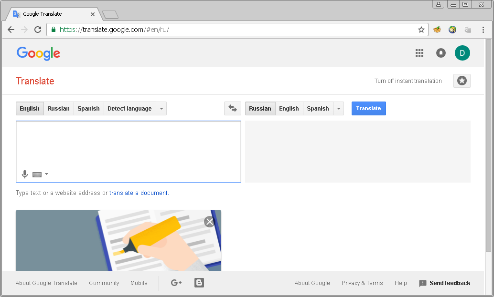

GTA is a Google Translate Assistant extension for the Google Chrome browser. The extension was specially designed to help with learning a foreign language using the great Google Translate service.

Let's look at the service more carefully. What's wrong with it? It's pretty nothing if you are using a mouse. So, what about if you want to use only keyboard to work with it? From this point of view it doesn't look very friendly. But, why? Let's see.
When you start typing in any text Google immediately brings a list of suggestions to you. It's very useful. But, there's a problem, you can't see phonetic notation (transcription) anymore and you aren't able to access the buttons -- for example, to play pronunciation sounds -- before you've pressed Esc key to remove the suggestion list.

An another essential problem is that you can't switch languages without your mouse. But, what about if we might be able to see the transcription all the time and also have some useful keyboard shortcuts to switch languages, play pronunciation, etc? Sounds good? Well, let's go ahead.

After you has installed the GTA extension, you will be able to see the transcription instead of the 'Translate' header and get the following shortcuts:
Note: The Shift + Alt shortcut is more useful when you need
to switch between your favorite languages in the Google service, because in this
way you can also switch between keyboard input languages and start typing with the
different language immediately. Use the Ctrl + ' / ' shortcut if you just
need to switch languages in the service only.
You can have this extension installed only in Developer mode currently. To do that click the "Customize and control Google Chrome" button and select "More tools -> Extensions", then enable the "Developer mode" and press the "Load unpacked extension" button. Point the folder when you have downloaded this repository.

Finally, reload the Google Translate service page.
Why isn't any customization of shortcuts provided?
The code is pretty simple, so you can change it as you need. Maybe in the next release.
Why is the developer mode needed to be used?
I haven't yet plans to post the utility on the Google store. So, I apologize for this inconvenience.